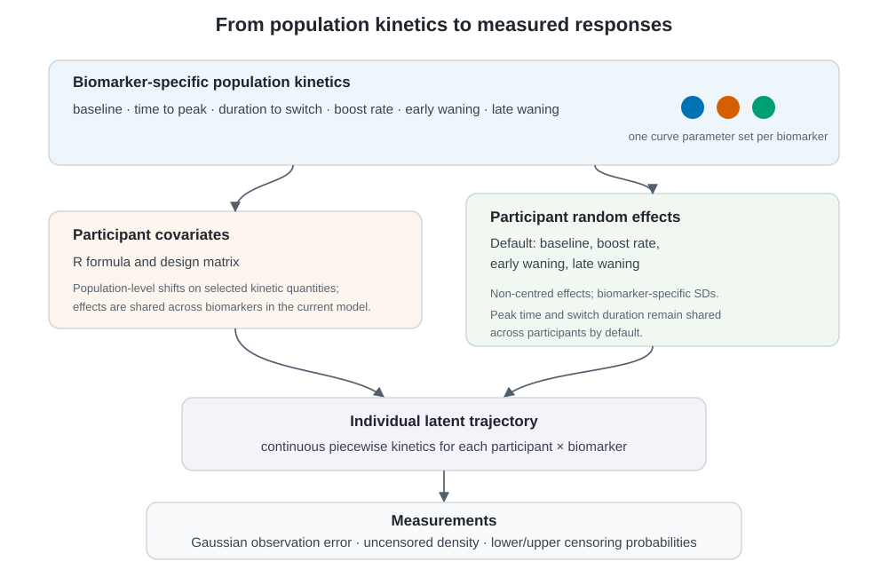

Covariates describe systematic differences between participant profiles. They shift population kinetic parameters; participant random effects then describe remaining heterogeneity around those conditional population curves.

The default hierarchy. Biomarker-specific population kinetics are modified by participant covariates and selected non-centred participant effects, producing individual latent trajectories and finally measured or censored observations.
Formula and model matrix
Use an ordinary one-sided R formula:
library(epikinetics)
dat <- doc_delta_data()
prepared <- prepare_epikinetics_data(
dat,
formula = ~ infection_history,
lower_limit = 5,
upper_limit = 2560
)
prepared$mappings$reference_levels#> infection_history
#> "Infection naive"
prepared$mappings$design_columns#> design_column term
#> 1 infection_historyPreviously infected (Pre-Omicron) infection_history
#> variables level reference_level
#> 1 infection_history Previously infected (Pre-Omicron) Infection naive
#> label
#> 1 infection_history=Previously infected (Pre-Omicron) (vs Infection naive)
head(model.matrix(prepared))#> infection_historyPreviously infected (Pre-Omicron)
#> 1 0
#> 2 0
#> 3 0
#> 4 1
#> 5 0
#> 6 1Categorical variables use the active R contrasts, continuous
variables remain on their supplied scale, and supported interactions are
encoded by model.matrix(). Character predictors are
converted to factors. Covariates must be constant within
participant.
Use a conventional intercept formula. epikinetics
removes that design intercept internally because each biomarker already
has population intercept parameters. A no-intercept formula such as
~ 0 + infection_history would be redundant and is
rejected.
For continuous variables, centre or rescale in the input data when a
one-unit coefficient is not scientifically useful. Keeping this
transformation explicit makes both coefficients and future
newdata easier to interpret.
Meaning of a coefficient
For baseline, a coefficient is an additive shift in expected log2
response; 2^coefficient is the response-scale ratio.
Positive timing and rate quantities use a log link, so
exp(coefficient) is their multiplicative shift. This
preserves positivity and the ordering of peak and switch times.
By default, a non-trivial formula modifies all six kinetic quantities, matching the original scientific model. A narrower scientific hypothesis can name only the affected quantities:
prepare_epikinetics_data(
dat,
formula = ~ infection_history,
covariate_parameters = c("baseline", "late_waning_rate")
)Regression effects are shared across biomarkers in the current model.
posterior_parameters(fit, level = "regression") returns the
numeric design column, represented term/level, reference level,
link-scale coefficient, and interpretable transformed effect.
Covariates in prediction
The prepared object retains its terms, assignments, contrasts, factor levels, and labelled design columns. Prediction therefore applies exactly the encoding used during fitting:
prediction_grid(prepared)
#> .profile infection_history
#> 1 1 Infection naive
#> 2 2 Previously infected (Pre-Omicron)The default grid keeps categorical combinations observed among
participants and fixes continuous predictors at participant-level
medians. These are conditional population profiles, not
averages over the sample. Explicit newdata can select
fitted profiles; unknown factor levels fail early. Categorical profile
columns automatically determine facets in the default population
plot.
The default participant random effects apply to baseline, boost rate, early waning, and late waning. Peak time and switch duration are shared across participants after conditioning on covariates. This is an overridable modelling assumption, described fully in Kinetics model and statistical structure.
Continue with Population-level kinetics to see how these profiles become trajectories.